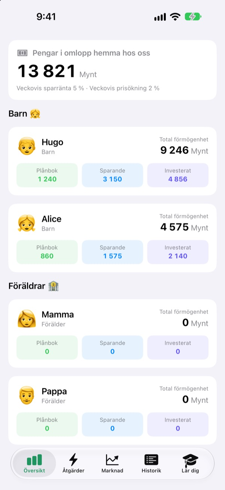
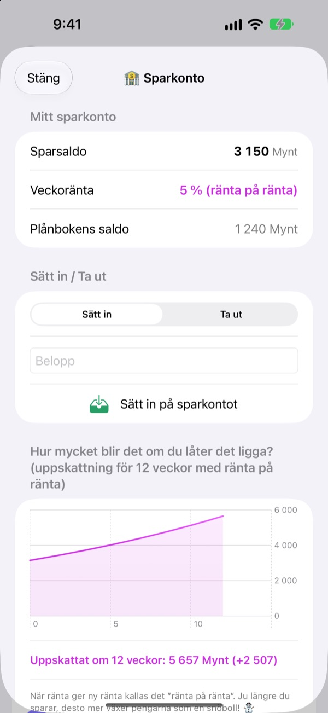
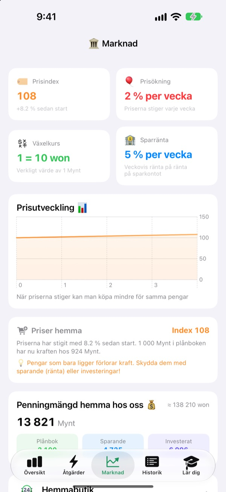
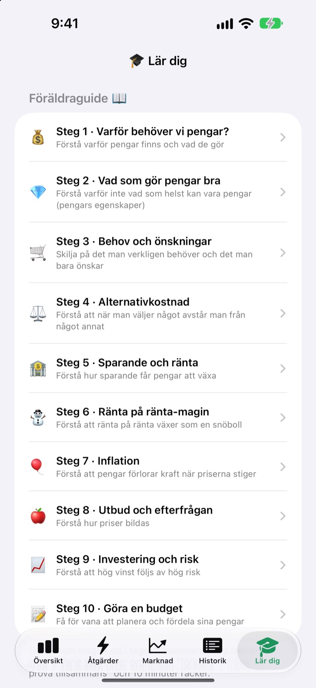

Fickpengadagen blir
en lektion om pengar
Du är familjens centralbank och barnen är kunderna. De får fickpengar i er egen valuta, köper godis, ser räntan landa på sparandet och känner av upp- och nedgångarna i en övningsfond.
Alla funktioner är gratis. Riktiga pengar används aldrig.

Var skulle du lägga 1 000 mynt?
Samma 1 000 mynt ligger i en plånbok, på ett sparkonto och i tre fonder. Hoppa fram en vecka i taget och se vad som händer med var och en. Allt följer samma regler som appen.
”Spara så växer det.” Går det verkligen fram till ett barn?
Ränta, ränta på ränta, inflation: ju mer man förklarar, desto längre bort låter det. I SukSuk Fickpengar tjänar, spenderar och väntar barnen själva. När de upptäcker att förra veckans sparande har fått ränta åker nästa fickpeng direkt in på sparkontot.
Se tålamodet löna sig
Pengar på sparkontot får ränta på ränta varje vecka. Du bestämmer räntan, och ett diagram visar vad beloppet växer till på 12 veckor om det får ligga kvar.
Inte öppnat appen på några dagar? När den öppnas betalas alla veckor den är skyldig ut på en gång.

Se priserna äta upp plånboken
Fliken Marknad samlar familjens prisindex, inflation, ränta, penningmängd och fondpriser på en skärm. När priserna stiger syns det hur mycket mindre 1 000 mynt i plånboken nu räcker till.
Barnen ser i tydliga siffror att pengar som bara ligger krymper, medan sparade eller investerade pengar håller värdet.

Tio samtal att ta tillsammans
Föräldraguiden tar er genom tio steg: varför vi behöver pengar, behov och önskningar, alternativkostnad, sparande och ränta, ränta på ränta, inflation, investering och risk och till sist en budget.
En ränta på ränta-kalkylator och en kalkylator för prisexperiment låter er ändra siffrorna och se vad som händer.

Igång i tre steg
- 1
Döp er valuta
Bönor, Stjärnor, Mynt, eller vad familjen nu vill kalla den.
- 2
Välj en förälder-PIN
Fyra siffror. Bara den som kan den kan ge fickpengar eller ändra bankinställningarna.
- 3
Lägg till familjen
Lägg till barn och föräldrar, ge de första fickpengarna och sätt igång.
Vad finns var
- Översikt
- Allas plånbok, sparande och investeringar i en blick
- Åtgärder
- Ge eller dra av fickpengar, Streckkod för vara, Lägg till vara, Bjud in barn, Barntelefonläge, Bankinställningar (kräver förälder-PIN)
- Marknad
- Prisindex, inflation, växelkurs, sparränta, penningmängd, fondpriser
- Historik
- Varje pengarörelse per datum, medlem eller typ
- Lär dig
- Föräldraguide i tio steg, ränta på ränta-kalkylator, kalkylator för prisexperiment
- 🐢 Sköldpadda Trygg fond
- Små dagliga svängningar, långsam och jämn uppgång
- 🐰 Kanin Tillväxtaktier
- Upp och ner, men de växer
- 🚀 Raket Äventyrsaktier
- Kan skjuta i höjden, kan rasa
Från start gäller 5 % sparränta och 2 % inflation per vecka. Båda ändras i Föräldraläge under Bankinställningar. Med 0 % inflation står priserna still.
Alla funktioner är gratis
Gratis
- Er egen familjevaluta och ett PIN-låst Föräldraläge
- Ge och dra av fickpengar, Hemmabutik och betalning med streckkod
- Ett sparkonto med ränta på ränta varje vecka
- Tre övningsfonder med avkastningsdiagram
- Fliken Marknad och en daterad transaktionshistorik
- Föräldraguiden i tio steg och två kalkylatorer
- Barntelefonläge och synkning via iCloud
Stöd utvecklaren
- Skicka ett litet dricksbelopp av valfri storlek från Bankinställningar i Föräldraläge
- Dricks låser inte upp något. Appen fungerar precis likadant
Ingen reklam, ingen prenumeration. Dricksknappen finns bara i Föräldraläge, så barnen ser aldrig någon köpknapp.
Frågor
Används riktiga pengar?
Nej. Valutan och alla transaktioner i appen är på låtsas och bara till för lärande. Inget är kopplat till ett riktigt bankkonto, kort eller kontanter.
Hur ser vi samma konton i mitt barns telefon?
Enheter som är inloggade med samma iCloud-konto synkar familjens konton automatiskt. Kontrollera att iCloud är på under Inställningar > Apple-konto > iCloud. Under Bjud in barn på fliken Åtgärder kan du skapa en QR-inbjudan som barnet skannar med kameran. Utan iCloud stannar datan bara på den enheten.
Vad är Barntelefonläge?
Det gör barnets telefon till en skärm bara för barnet. Barnet ser bara sin egen plånbok, sina investeringar, sin historik och lektionerna, och det krävs förälder-PIN för att lämna läget.
Jag har glömt förälder-PIN:en.
PIN:en sparas bara på enheten, så inte ens utvecklaren kan återställa den. Raderar du appen och installerar om den kan du ställa in allt från början, men då raderas också er befintliga data.
Hur fungerar sparräntan?
Varje vecka läggs ränta på ränta automatiskt till sparsaldot. Du väljer räntan i Föräldraläge, och veckor som har gått räknas av nästa gång appen öppnas.
Följer fondpriserna den riktiga marknaden?
Nej. Fondpriserna är övningsdata som ändras en gång om dagen i appen. Ju mer riskfylld fonden är, desto större svängningar. Det är inga riktiga finansiella produkter.
Varför stiger priserna?
För att barnen ska känna av inflation stiger familjens prisindex lite varje vecka. Du kan ändra takten, eller sätta den till 0 % för att stänga av den, i Föräldraläge under Bankinställningar. Höjer du samtidigt priset på godis och leksaker i Hemmabutiken lite grann, fastnar lärdomen bättre.
Hur raderar jag allt?
När du raderar appen försvinner datan på enheten. Data som synkats till iCloud raderar du under Inställningar > Apple-konto > iCloud > Hantera lagring.
Skickas min familjs uppgifter någonstans?
Nej. Det finns ingen registrering, och all data stannar på din enhet och i ditt eget iCloud-konto. Utvecklaren får bara feedback som du själv skickar från Föräldraläge, plus anonym användningsstatistik och kraschrapporter.
Vilka enheter fungerar den på?
iPhone med iOS 17.0 eller senare.
Frågor, fel eller idéer? Skriv till leeo@kakao.com. Berätta gärna vilken enhetsmodell och iOS-version du har, så kan vi hjälpa dig snabbare.